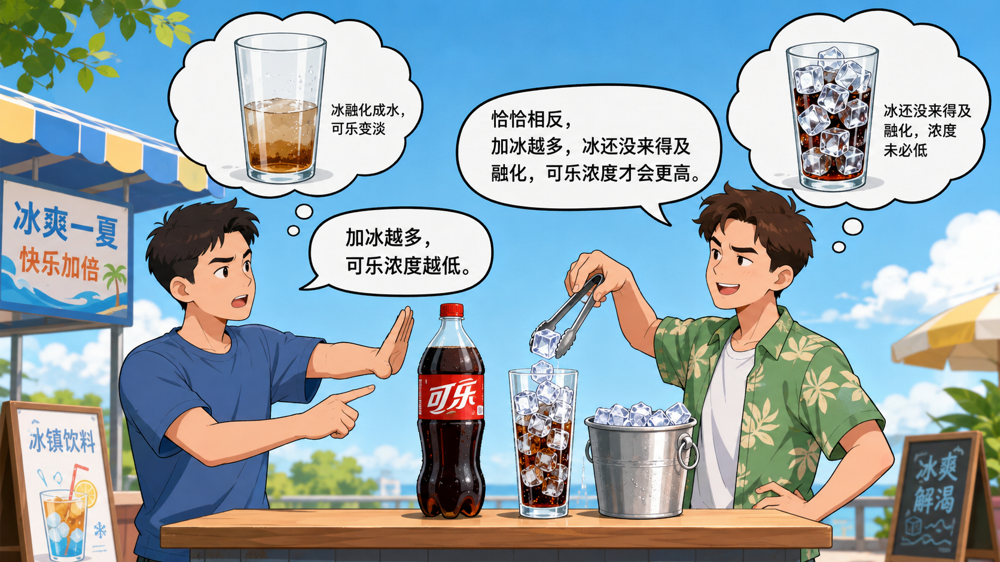

一杯可乐放多少冰？
300 ml 的可乐，我建议加 200 g 冰。
加冰越多，浓度不一定越低；在一定观察时间内，加入非常多的冰块反而会让浓度变高。
降温过程
加冰量对结果的影响
完整建模过程
0. 基准条件
默认模拟一杯 300 g 可乐，初始温度 25°C；冰块初始温度 -18°C；环境温度 25°C；默认观察时间为 5 分钟。页面上方滑块只改变加入冰量，下方观察时间滑块只改变读图时刻。
1. 建模对象与基本假设
研究对象是一杯可乐和若干冰块组成的开放热系统。模型只追踪可乐温度、剩余冰量、已融化冰水量和可乐浓度。为了让页面可以实时计算，模型做了以下简化：可乐近似为水溶液；杯中液体温度均匀；冰块用一个等效温度表示；杯壁和空气对可乐的加热合并为一个环境传热项；冰块形状不逐块建模，而用冰量近似表示总接触面积。
符号说明：m 表示质量，单位 g；T 表示温度，单位 °C；Q 表示热量，单位 J；c 表示比热容，单位 J/(g·°C)；Δt 表示数值模拟的时间步长。
2. 传热原理：牛顿冷却定律的等效形式
传热的物理基础是牛顿冷却定律：单位时间传递的热量近似正比于温差。更标准的形式是 hA(T_hot - T_cold)Δt，其中 h 是换热系数，A 是接触面积。页面模型把难以直接测量的 h 和 A 合并成等效参数。
符号说明：h 是换热系数；A 是换热面积；T_hot 和 T_cold 分别是热端和冷端温度。
3. 环境给可乐的热量
环境项表示空气和杯壁把热量传回可乐。这里没有显式写入可乐质量，而是因为环境换热主要由杯子外表面积、杯壁材料和空气流动决定；这些因素在当前页面中被视为固定，并合并到 k_env 中。
符号说明：Q_env 是环境传给可乐的热量；k_env 是环境等效传热系数；T_air 是室温；T_cola 是可乐温度。
4. 可乐传给冰的热量
冰块项同样来自牛顿冷却定律。模型用剩余冰量 m_ice 近似接触面积：冰越多，通常总表面积越大，传热越快。
符号说明：Q_ice 是可乐传给冰的热量；k_ice = h_ice·α；A_ice ≈ α·m_ice。
5. 冰的升温与融化
冰拿到热量后并不会立刻全部变成水。若冰温低于 0°C，热量先用于把冰升温到 0°C；达到 0°C 后，后续热量主要用于相变融化。
符号说明：Q_warm 是把冰升温到 0°C 所需热量；L_f 是熔化潜热；dm 是本步融化的冰质量。
6. 可乐温度的数值更新
可乐的净热量等于环境输入减去冰吸走的热量。模型使用显式欧拉法逐步更新。
符号说明：Q_net = Q_env − Q_to_ice；m_liquid = m_cola + m_melted。液体质量越大，同样热量造成的温度变化越小。
7. 可乐浓度指标
浓度是"原始可乐在液体总量中的质量占比"，用于衡量融冰水造成的稀释。
8. 评价指标：口感分数
口感分数满分 100，由温度分项（65 分）和浓度分项（35 分）两部分组成。
温度分项（满分 65）：依据可口可乐 fountain 标准（32–40°F，即 0–4°C 为最佳区间）采用分段线性模型。
浓度分项（满分 35）：基于 2023 年 JND 研究（Valicente et al., Journal of Sensory Studies），可乐甜度的刚可觉察差异约为 8% 相对浓度降低，对应本模型浓度约 92%。低于此阈值才开始有明显感知，因此使用带阈值的分段函数。
总分 = S_T + S_C。C 为可乐浓度（原始可乐质量 / 液体总质量）。
温度得分曲线（满分 65）
浓度得分曲线（满分 35）
9. 模型边界
这个模型适合解释趋势，但不是完整流体热传导仿真。它没有显式计算冰块真实几何形状、搅拌产生的对流、杯壁热容量、二氧化碳逸出和人的主观口味差异。最严谨的使用方式是把它作为实验设计和数据解释的基线，再用实测温度曲线校准 k_env 与 k_ice。